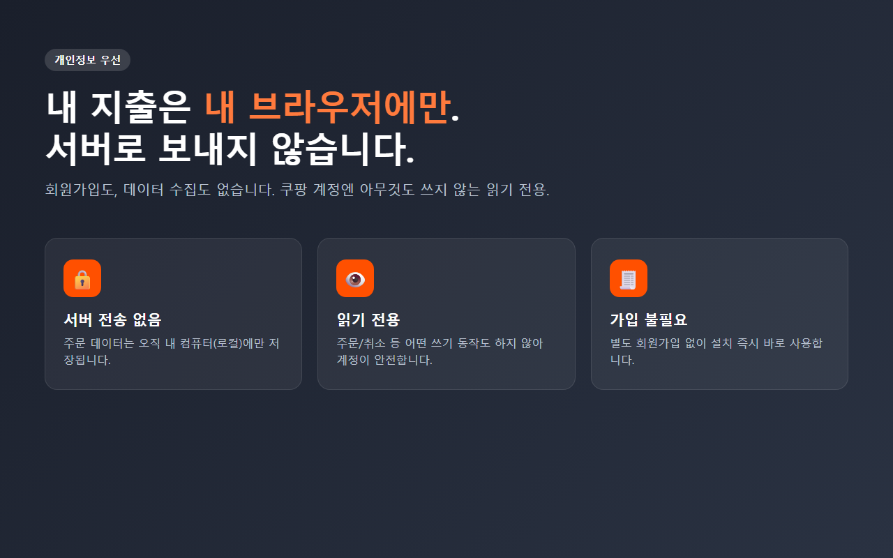

쿠팡 주문내역을 엑셀로 정리하는 방법을 찾다 보면 잘 만든 엑셀 템플릿을 많이 만난다. 오빠두처럼 엑셀 자체를 깊게 다루는 곳들 자료는 퀄리티가 좋다. 나도 참고 많이 했다. 그런데 한 가지가 계속 걸렸다.
일부 엑셀 자동화 방법은, 쿠팡에서 데이터를 가져오려고 브라우저 쿠키나 특정 값을 복사해서 엑셀(또는 스크립트)에 붙여넣게 한다. 작동은 하는데, 나는 이게 두 가지로 불편했다.
첫째, 복잡하다. 개발자도구 열고, 특정 값 찾아서 복사하고… 비개발자라면 여기서부터 막힌다.
둘째, 찜찜하다. 쿠키는 로그인 상태를 담고 있는 값이라, 이걸 어딘가에 붙여넣는 게 보안상 기분이 좋지 않았다. "이거 잘못 새면 계정 넘어가는 거 아냐?" 싶은 거다.
그래서 만든 확장은 아예 접근이 다르다. 쿠키를 복사할 필요 없이, 내가 이미 로그인해서 보고 있는 주문목록 페이지의 데이터를 그 자리에서 읽는다. 버튼 한 번 누르면 끝이고, 값을 어디 붙여넣거나 할 일이 없다.
그리고 긁어온 데이터는 외부 서버로 안 나가고 내 브라우저에만 저장된다. 쿠팡 계정에도 아무것도 안 쓰는(주문/취소 X) 읽기 전용이라, 계정이 위험할 일이 없다.

오해는 말자. 엑셀 템플릿이 나쁜 게 아니다. 표를 완전히 내 마음대로 짜고 싶거나, 복잡한 수식·차트를 직접 만들고 싶으면 템플릿이 훨씬 자유롭다. 확장은 정해진 리포트와 CSV 내보내기 위주라, 자유도는 템플릿이 이긴다.
| 엑셀 템플릿 | 확장 | |
|---|---|---|
| 쿠키 복사 | 필요한 경우 있음 | 불필요 |
| 난이도 | 중~상 | 버튼 한 번 |
| 자유도 | 높음 (직접 편집) | 정해진 리포트 |
| 데이터 저장 | 파일 | 브라우저 로컬 |
템플릿은 자유롭지만 손이 많이 가고, 확장은 빠르지만 정해진 틀 안이다. 나는 "빠르고 안전하게"가 우선이라 확장을 쓴다. 뽑은 CSV를 템플릿에 붙여 쓰면 둘의 장점만 챙길 수도 있다.
쿠키 복사하는 방식이 부담스러웠던 분이라면, 확장 쪽이 마음 편할 거다.
#오빠두 #쿠팡엑셀템플릿 #쿠팡쿠키복사 #쿠팡주문내역엑셀 #쿠팡가계부 #엑셀자동화 #크롬확장 #개인정보 #1인개발